罗马字表记
五十音图：直音
Table 直音的罗马字表记（左平右片）
| 行 | 元音 | a | i1 | i2 |
u |
e1 | e2 | o1 | o2 |
|---|---|---|---|---|---|---|---|---|---|
| あ行 | 假名 | あ|ア | い|イ | う|ウ | え|エ甲 | お|オ | |||
| OJ | a | i | u | e2 | o | ||||
| EMJ - MdJ | a | i | u | e | o | ||||
| あ行长音 | 假名 | ああ|アア | いい|イイ | うう|ウウ | えい|エー | おう|オー | |||
| EMJ - MdJ | aa | ii | uu | ei, ee | ei（标准语/ee/） | ou（标准语/oo/） | |||
| 假名 | ええ|エー | おお|オー | |||||||
| EMJ - MdJ | ee | oo | |||||||
| か行 | 假名 | か|カ | き|キ甲 | き|キ乙 | く|ク | け|ケ甲 |
け|ケ乙 | こ|コ甲 | こ|コ乙 |
| OJ | ka | ki1 | ki2 | ku | ke1 | ke2 | ko1 | ko2 | |
| EMJ - MdJ |
ka | ki | ki | ku | ke | ke | ko | ko | |
| が行 | 假名 | が|ガ | ぎ|ギ甲 | ぎ|ギ乙 | ぐ|グ | げ|ゲ甲 |
げ|ゲ乙 | ご|ゴ甲 | ご|ゴ乙 |
| OJ | ga | gi1 | gi2 | gu | ge1 | ge2 | go1 | go2 | |
| EMJ - MdJ |
ga | gi | gi | gu | ge | ge | go | go | |
| さ行 | 假名 | さ|サ | し|シ | す|ス | せ|セ | そ|ソ甲 | そ|ソ乙 | ||
| OJ | sa | si | su | se | so1 | so2 | |||
| EMJ - MdJ | sa | si | su | se | so | so | |||
| ざ行 | 假名 | ざ|ザ | じ|ジ | ず|ズ | ぜ|ゼ | ぞ|ゾ甲 | ぞ|ゾ乙 | ||
| OJ | za | zi | zu | ze | zo1 | zo2 | |||
| EMJ - MdJ | za | zi | zu | ze | zo | zo | |||
| た行 | 假名 | た|タ | ち|チ | つ|ツ | て|テ | と|ト甲 | と|ト乙 | ||
| OJ | ta | ti | tu | te | to1 | to2 | |||
| EMJ MdJ（严式） |
ta | ti | tu | te | to | to | |||
| LMJ - MdJ | ta | ci | tsu | te | to | to | |||
| だ行 | 假名 | だ|ダ | ぢ|ヂ | づ|ヅ | で|デ | ど|ド甲 | ど|ド乙 | ||
| OJ | da | di | du | de | do1 | do2 | |||
| EMJ | da | di | du | de | do | do | |||
| LMJ MdJ（方言） |
da | ji | dzu | de | do | do | |||
| MdJ（标准语） MdJ（严式） |
da | zi | zu | de | do | do | |||
| な行 | 假名 | な|ナ | に|ニ | ぬ|ヌ | ね|ネ |
の|ノ甲 | の|ノ乙 | ||
| OJ | na | ni | nu | ne | no1 | no2 | |||
| EMJ - MdJ | na | ni | nu | ne | no | no | |||
| は行 | 假名 | は|ハ | ひ|ヒ甲 | ひ|ヒ乙 | ふ|フ | へ|ヘ甲 |
へ|ヘ乙 | ほ|ホ | |
| OJ | pa | pi1 | pi2 | pu | pe1 | pe2 | po | ||
| EMJ | fa-, -wa | fi-, -wi | fi-, -wi | fu-, -u | fe-, -we | fe-, -we | fo-, -wo | ||
| LMJ | fa-, -wa | fi-, -i | fi-, -i | fu-, -u | fe-, -e | fe-, -e | fo-, -o | ||
| MdJ | ha-, -wa | hi-, -i | hi-, -i | fu-, -u | he-, -e | he-, -e | ho-, -o | ||
| MdJ（严式） | ha-, -wa | hi-, -i | hi-, -i | hu-, -u | he-, -e | he-, -e | ho-, -o | ||
| ば行 | 假名 | ば|バ | び|ビ甲 | び|ビ乙 | ぶ|ブ | べ|ベ甲 | べ|ベ乙 | ぼ|ボ | |
| OJ | ba | bi1 | bi2 | bu | be1 | be2 | bo | ||
| EMJ - MdJ | ba | bi | bi | bu | be | be | bo | ||
| ぱ行 | 假名 | ぱ|パ | ぴ|ピ | ぷ|プ | ぺ|ペ | ぽ|ポ | |||
| LMJ - MdJ | pa | pi | pi | pu | pe | po | |||
| ま行 | 假名 | ま|マ | み|ミ甲 | み|ミ乙 | む|ム | め|メ甲 |
め|メ乙 | も|モ甲 | も|モ乙 |
| OJ | ma | mi1 | mi2 | mu | me1 | me2 | mo1（飞鸟）, mo（奈良） |
mo2（飞鸟）, mo（奈良） |
|
| EMJ - MdJ | ma | mi | mi | mu | me | me | mo |
mo | |
| や行 | 假名 | や|ヤ | ゆ|ユ | え|エ乙 |
よ|ヨ甲 | よ|ヨ乙 | |||
| OJ | ya | yu | e1 (= ye) | yo1 | yo2 | ||||
| EMJ - MdJ | ya | yu | e | yo | yo | ||||
| ら行 | 假名 | ら|ラ | り|リ | る|ル | れ|レ | ろ|ロ甲 | ろ|ロ乙 | ||
| OJ | ra | ri | ru | re | ro1 | ro2 | |||
| EMJ - MdJ | ra | ri | ru | re | ro | ro | |||
| わ行 | 假名 | わ|ワ | ゐ|ヰ | ゑ|ヱ | を|ヲ | ||||
| OJ | wa | wi | we | wo | |||||
| EMJ | wa | wi | we | wo | |||||
| LMJ - MdJ | wa | i | e | o | |||||
| 其他 | 假名 | ん|ン | っ|ッ | ||||||
| EMJ - MdJ | n | Q |
※ 传统上えエ甲乙不对应 e1/2，而是对应 e2/1；大写字母表示不分甲乙。
五十音图：拗音
Table 拗音的罗马字表记（左平右片）
| 行 | 元音 | ya | yu | yo | wa | wi | we | wya | wyo |
|---|---|---|---|---|---|---|---|---|---|
| きゃ行 | 假名 | きゃ|キャ | きゅ|キュ | きょ|キョ | くゎ|クヮ | くゐ|クヰ | くゑ|クヱ | くゐゃ|クヰャ | くゐょ|クヰョ |
| EMJ | kya | kyu | kyo | kwa | kwi | kwe | kwya | kwyo | |
| LMJ | kya | kyu | kyo | kwa | ki | ke | kya | kyo | |
| MdJ | kya | kyu | kyo | ka | ki | ke | kya | kyo | |
| ぎゃ行 | 假名 | ぎゃ|ギャ | ぎゅ|ギュ | ぎょ|ギョ | ぐゎ|グヮ | ぐゐ|ぐヰ | ぐゑ|ぐヱ | ぐゐゃ|ぐヰャ | ぐゐょ|ぐヰョ |
| EMJ | gya | gyu | gyo | gwa | gwi | gwe | gwya | gwyo | |
| LMJ | gya | gyu | gyo | gwa | gi | ge | gya | gyo | |
| MdJ | gya | gyu | gyo | ga | gi | ge | gya | gyo | |
| しゃ行 | 假名 | しゃ|シャ | しゅ|シュ | しょ|ショ | |||||
| EMJ - MdJ | sya | syu | syo | ||||||
| じゃ行 | 假名 | じゃ|ジャ | じゅ|ジュ | じょ|ジョ | |||||
| EMJ - MdJ | zya | zyu | zyo | ||||||
| ちゃ行 | 假名 | ちゃ|チャ | ちゅ|チュ | ちょ|チョ | |||||
| EMJ MdJ（严式） |
tya | tyu | tyo | ||||||
| LMJ - MdJ | ca | cu | co | ||||||
| ぢゃ行 | 假名 | ぢゃ|ヂャ | ぢゅ|ヂュ | ぢょ|ヂョ | |||||
| EMJ | dya | dyu | dyo | ||||||
| LMJ MdJ（方言） |
ja | ju | jo | ||||||
| MdJ（标准语） MdJ（严式） |
zya | zyu | zyo | ||||||
| にゃ行 | 假名 | にゃ|ニャ | にゅ|ニュ | にょ|ニョ | |||||
| EMJ - MdJ |
nya | nyu | nyo | ||||||
| ひゃ行 | 假名 | ひゃ|ヒャ | ひゅ|ヒュ | ひょ|ヒョ | |||||
| EMJ - LMJ | fya | fyu | fyo | ||||||
| MdJ | hya | hyu | hyo | ||||||
| びゃ行 | 假名 | びゃ|ビャ | びゅ|ビュ | びょ|ビョ | |||||
| EMJ - MdJ | bya | byu | byo | ||||||
| ぴゃ行 | 假名 | ぴゃ|ピャ | ぴゅ|ピュ | ぴょ|ピョ | |||||
| LMJ - MdJ | pya | pyu | pyo | ||||||
| みゃ行 | 假名 | みゃ|ミャ | みゅ|ミュ | みょ|ミョ | |||||
| EMJ - MdJ | mya | myu | myo | ||||||
| りゃ行 | 假名 | りゃ|リャ | りゅ|リュ | りょ|リョ | |||||
| EMJ - MdJ | rya | ryu | ryo |
现代方言音韵：元音
Table 元音的罗马字表记（非十分严谨）
| 位置 | 前 | 央 | 后 |
| 高 | i [i] [ɨ] 东北、出云 |
ï [ɨ] 北琉球、东北（奥羽山脉东北） [ɯ] 东北（奥羽山脉西南） [sɿ ~ zɿ] 宫古、八重山，[s- ~ z-] 根据前一辅音清浊 [ɯ] 宫古大神 |
u [ɯ] 东日本、出云、北陆 [ɯ] 出云 [u] 西日本、九州、琉球 [ɨ] s, z, ts, y后 |
| 中 | e [e] ɛ [ɛ] 方言 æ [æ] 方言 ei [ei ~ ee] 方言 |
ö [ə] 琉球 |
o [o] ɔ [ɔ] LMJ oo, ou [oo] |
| 低 | a [a] | ||
附加符号：清化 ̥ ；央化 ̈ 。通常元音重复表示延长。
现代方言音韵：辅音
Table 辅音的罗马字表记（非十分严谨）
| 法\位 | 双唇 | 唇齿 | 齿龈 | 卷舌 | 龈腭 | 硬腭 | 软腭 | 小舌 | 声门 |
| 鼻音 | m [m] n / __ {b, m, p, f, w} [m] 拨音 |
n [n] n / __ {c, d, dz, j, n, r, s, t, ts, y, z} [n] 拨音 |
g [ŋ] 方言（[g, ŋ] 不构成音位对立） ŋ [ŋ] 与那国（[g, ŋ] 构成音位对立） n / __ {g, h, k} [ŋ] 拨音 n / __ ## [ŋ] 小野津、志戸桶、与那国 |
n / __ ## [ɴ] 拨音 | |||||
| 咽化鼻音 | m' [mʔ] 奄美、喜界 |
n' [nʔ] 奄美 |
|||||||
| 塞音 | p [p] b [b ~ β] |
t [t] d [d] |
k [k] g [g] |
Q / {## __ V, __ ##} [ʔ] 独立促音（其他情况：Q 复制后一辅音） Ø, q / ## __ *V [ʔ] 奄美、德之岛、喜界、沖永良部、与论、冲绳（只在词首，对应本土古代为元音开头者） |
|||||
| 咽化塞音 | p / __ {*i, *u} [pʔ] 奄美 |
t / __ {*i, *u} [tʔ] 奄美、喜界、德之岛 T [tʔ] 与那国（词首） |
k / __ {*i, *u} [kʔ] 奄美、喜界、德之岛 K [kʔ] 与那国（词首） |
||||||
| 鼻冠塞音 | b [mb ~ mβ] 东北等保留鼻冠；LMJ 及以前的日语；PR |
d [nd] 东北等保留鼻冠；LMJ 及以前的日语；PR |
g [ŋg] 东北等保留鼻冠；LMJ 及以前的日语；PR |
||||||
| 有咝塞擦音 | ts [ts] dz [dz] |
c [tɕ] j [dʑ] |
|||||||
| 咽化有咝塞擦音 | ts / __ {*i, *u} [tsʔ] 奄美、喜界、德之岛 Ts [tsʔ] 与那国（词首） |
c / __ {*i, *u} [tɕʔ] 奄美、喜界、德之岛 |
|||||||
| 鼻冠有咝塞擦音 | dz [ndz] 东北等保留鼻冠；LMJ 及以前的日语 |
j [ndʑ] 东北等保留鼻冠；LMJ 及以前的日语 |
|||||||
| 有咝擦音 | s, ş [s] z, z̧ [z] [dz] 琉球 |
s / __ i; sy [ɕ] z / __ i; zy [ʑ] [dʑ] 琉球 |
|||||||
| 鼻冠有咝擦音 | z [nz] 东北等保留鼻冠 |
z / __ i; zy [nʑ] 东北等保留鼻冠 |
|||||||
| 无咝擦音 | f [ɸ] |
f [f] 宫古、黑岛、鳩间 v [v] 宫古、黑岛 |
h / __ i [ç] |
g [ɣ] 鼻浊 |
h [h] h / __ u [h ~ ɸ] 琉球 |
||||
| 近音 | w [w] | v [ʋ] 宫古 |
y [j] 辅音后则构成对应拗音 |
w [ɰ] w [w] |
|||||
| 闪音 | r [ɾ] | ||||||||
| 颤音 | r [r] | ||||||||
| 边近音 | l [l] 琉球 |
l [ɭ] 琉球 |
本土清辅音为送气；琉球与咽化清辅音对立的清辅音为送气（必要时标记送气：h / C __ ）。
行政区划
行政区划图
Figure 行政区划图
| 说明 | 图（点击放大） |
|---|---|
| 古坟势力 | 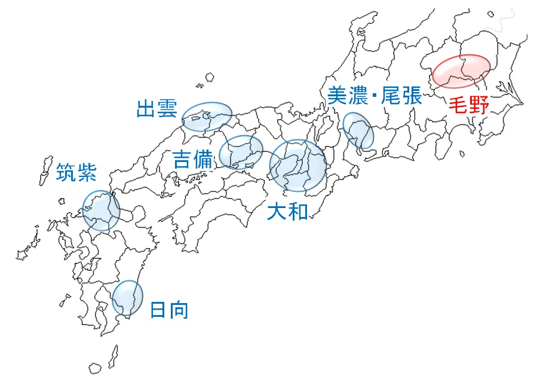 |
| 国造 |  |
| 五畿七道 | 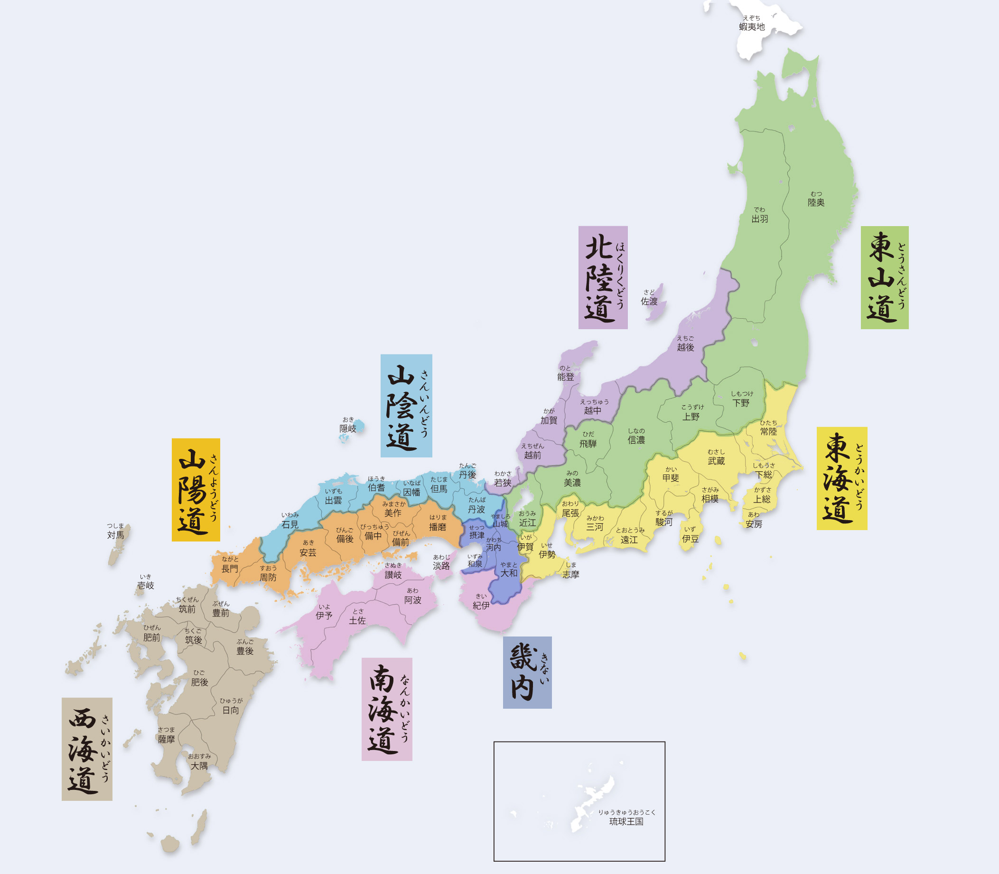 |
| 国县对照 | 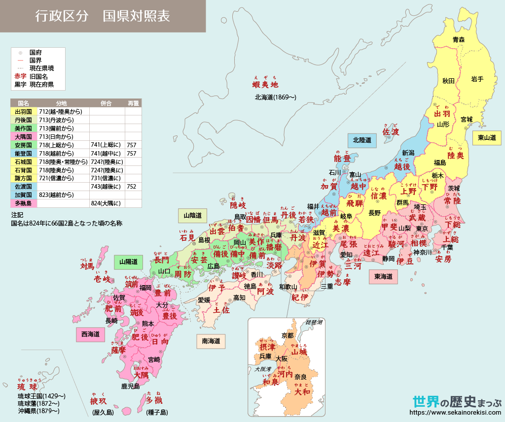 |
| 都道府县 | 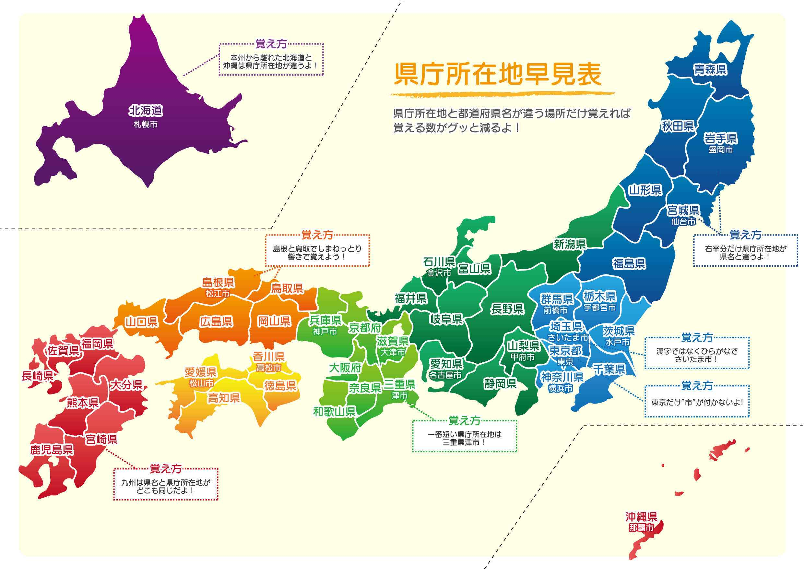 |
| 日本地形 | 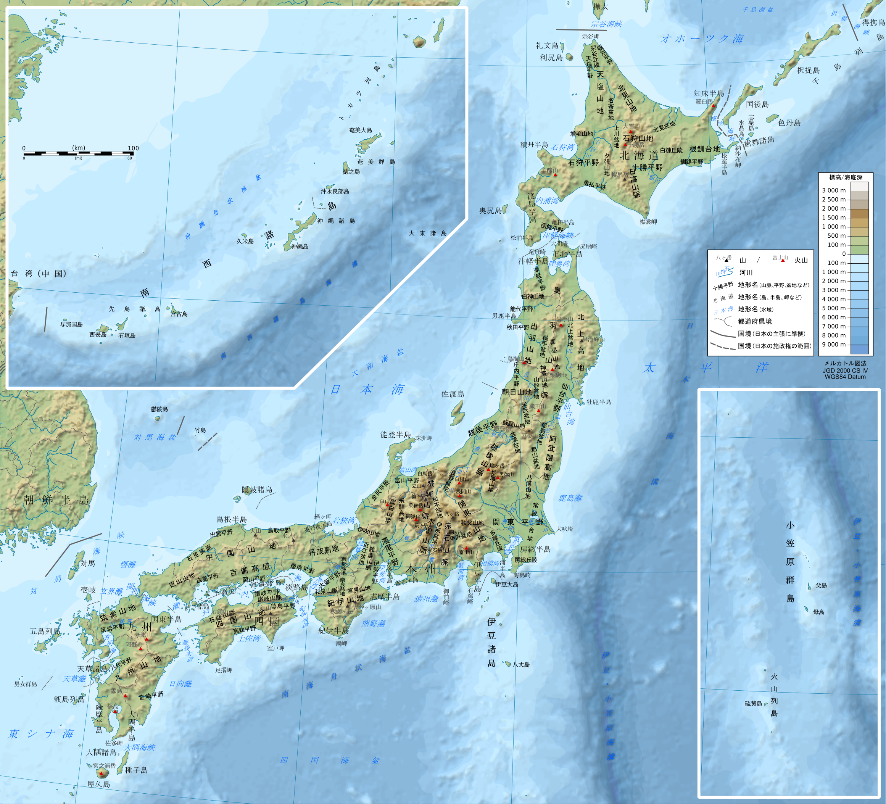 |
| 萨南群岛 | 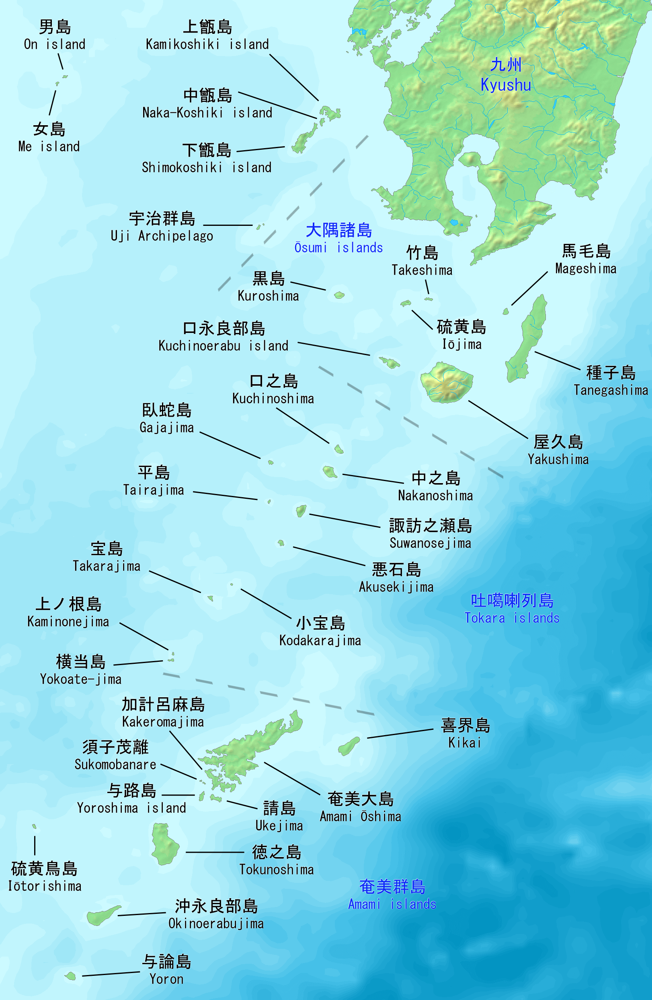 |
| 琉球群岛 | 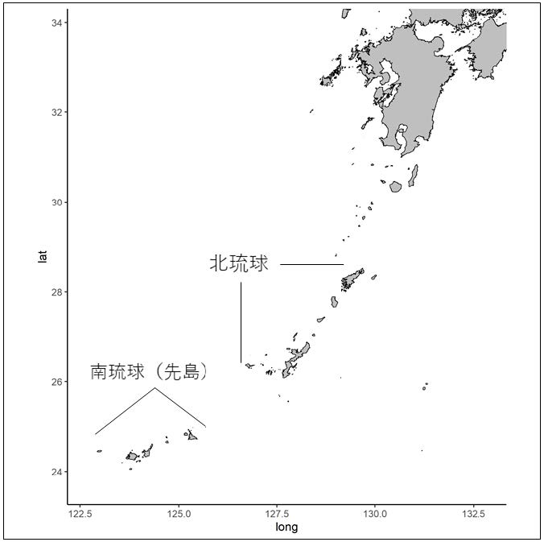 |
| 北琉球 | 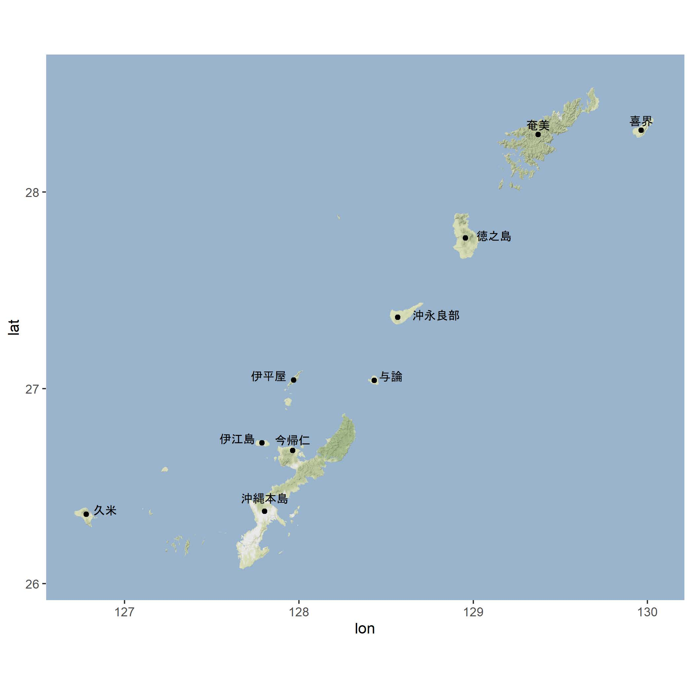 |
| 奄美 | 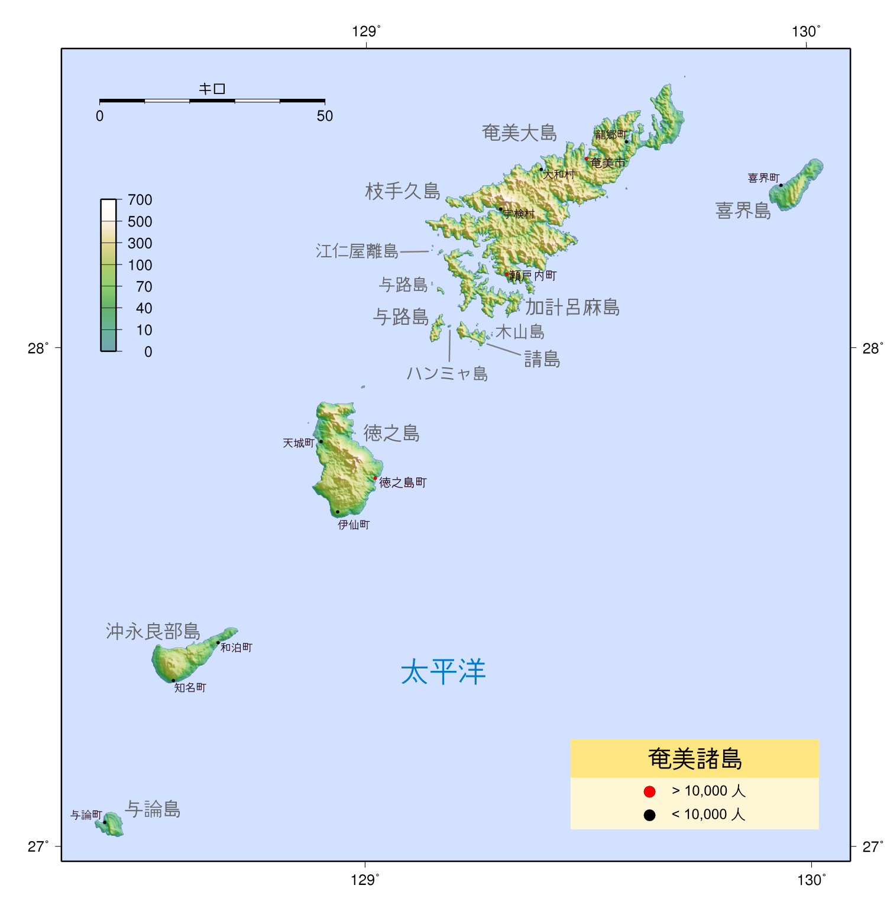 |
| 冲绳 | 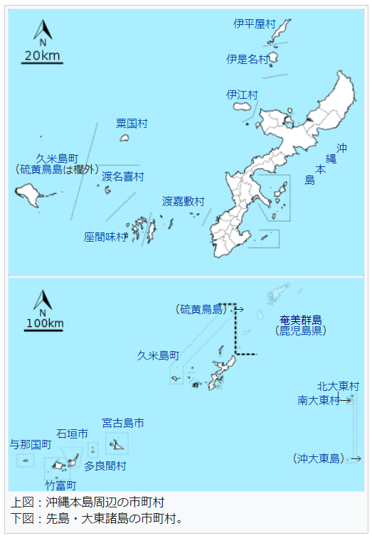 |
| 冲绳本岛 | 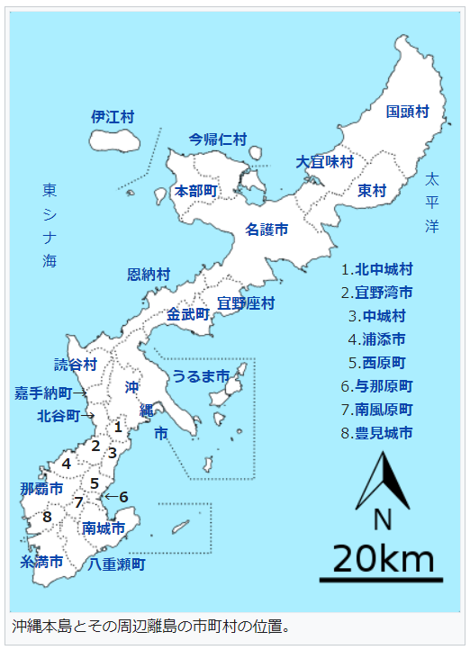 |
| 南琉球 | 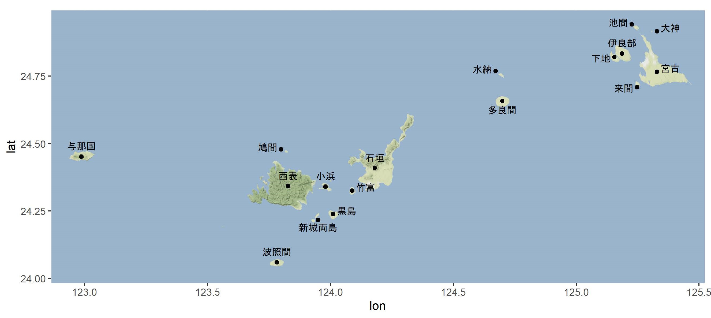 |
| 宫古 | 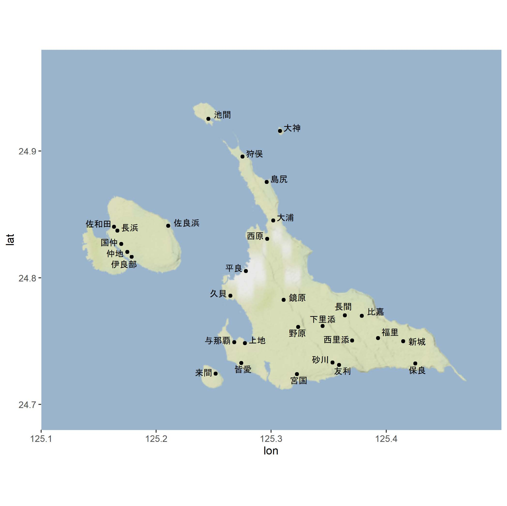 |
| 八重山 | 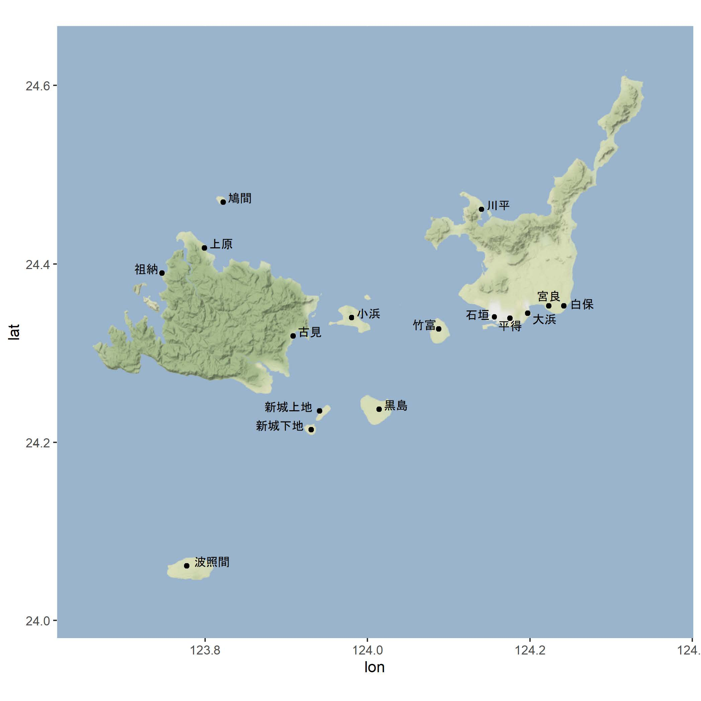 |
令制国与都道府县
Table 五畿七道、令制国
| 五畿七道 | 国名 | 现代假名遣 | 历史假名遣 | 又称 | 备注 |
|---|---|---|---|---|---|
| 五畿（畿内） | 大和国 | やまと | 和州、倭、養徳 | ||
| 山城国 | やましろ | 山州、城州、雍州、城、山背、山代 | |||
| 河内国 | かわち | かはち | 河州、凡河内 | ||
| 和泉国 | いずみ | いづみ | 泉州 | 716 年从河内国划分出来、740 年并回、757 年再划分 | |
| 摂津国 | せっつ | 摂州、津国、難波、浪速、浪華、浪花 | |||
| 東海道 | 伊賀国 | いが | 伊州、賀州、以加 | ||
| 伊勢国 | いせ | 勢州、神国 | |||
| 志摩国 | しま | 志州 | 8 世纪初从伊勢国划分出来 | ||
| 尾張国 | おわり | をはり | 尾州、張州 | ||
| 三河国 | みかわ | みかは | 三州、参州 | ||
| 遠江国 | とおとうみ | とほたふみ | 遠州、遠淡海 | ||
| 駿河国 | するが | 駿州 | |||
| 伊豆国 | いず | いづ | 豆州 | 680 年从駿河国划分出来 | |
| 甲斐国 | かい | かひ | 甲州 | ||
| 相模国 | さがみ | 相州、相武 | |||
| 武蔵国 | むさし | 武州、无邪志、胸刺 | 771 年从東山道变更到東海道 | ||
| 安房国 | あわ | あは | 房州、安州 | 718 年从上総国划分出来、741 年并回、757 年再划分 | |
| 上総国 | かずさ | かづさ | 総州、南総 | ||
| 下総国 | しもうさ | しもふさ | 総州、北総 | ||
| 常陸国 | ひたち | 常州 | |||
| 東山道 | 近江国 | おうみ | あふみ | 江州、近州、近淡海 | |
| 美濃国 | みの | 濃州 | |||
| 飛騨国 | ひだ | 飛州、騨州 | |||
| 信濃国 | しなの | 信州、科野 | |||
| 諏訪国 | すわ | すは | 721 年从信濃国划分出来、731 年并回 | ||
| 上野国 | かずさ | かづさ | 総州、上州、上毛、上毛野 | ||
| 下野国 | しもつけ | 野州、下州、下毛、下毛野 | |||
| 陸奥国 | みちのおく、みちのく、むつ | 奥州、陸州、道奥 | 7 世纪从常陸国划分出来 | ||
| 石背国 | いわせ | いはせ | 磐瀬 | 718 年从陸奥国划分出来、数年后并回 | |
| 石城国 | いわき | いはき | 718 年从陸奥国划分出来、数年后并回 | ||
| 出羽国 | でわ | では | 羽州 | 712 年从越後国出羽郡划分出来。同年 10 月，陸奥国最上、置賜2郡编入出羽国。陸奥、出羽在戊辰战争后被分割 | |
| 陸奥国（1869-） | りくおう、むつ | 陸前、陸中等分割后的部分 | |||
| 陸前国 | りくぜん | 1869 年从陸奥国划分出来 | |||
| 陸中国 | りくちゅう | りくちゆう | 1869 年从陸奥国划分出来 | ||
| 岩代国 | いわしろ | いはしろ | 岩州 | 1869 年从陸奥国划分出来 | |
| 磐城国 | いわき | いはき | 磐州 | 1869 年从陸奥国划分出来 | |
| 羽前国 | うぜん | 1869 年从出羽国划分出来 | |||
| 羽後国 | うご | 1869 年从出羽国划分出来 | |||
| 北陸道 | 若狭国 | わかさ | 若州 | ||
| 越前国 | えちぜん | ゑちぜん | 越州、越 | ||
| 加賀国 | かが | 加州、賀州 | 823 年从越前国划分出来 | ||
| 能登国 | のと | 能州 | 718 年从越前国划分出来、741 年并回、757 年再划分 | ||
| 越中国 | えっちゅう | ゑつちゆう | 越州、越 | ||
| 越後国 | えちご | ゑちご | 越州、越 | ||
| 佐渡国 | さど | 佐州、渡州 | 718 年与越後国合并、752 年再划分 | ||
| 山陰道 | 丹波国 | たんば | 丹州、旦波、丹婆 | ||
| 丹後国 | たんご | 丹州 | 713 年从丹波国划分出来 | ||
| 但馬国 | たじま | たぢま | 但州 | ||
| 因幡国 | いなば | 因州、稲葉、稲羽 | |||
| 伯耆国 | ほうき | はうき | 伯州、伯 | ||
| 出雲国 | いずも | いづも | 雲州 | ||
| 石見国 | いわみ | いはみ | 石州 | ||
| 隠岐国 | おき | 隠州 | |||
| 山陽道 | 播磨国 | はりま | 播州、針間 | ||
| 美作国 | みまさか | 作州 | 713 年从備前国划分出来 | ||
| 備前国 | びぜん | 備州 | |||
| 備中国 | びっちゅう | びつちゆう | 備州 | ||
| 備後国 | びんご | 備州 | |||
| 安芸国 | あき | 芸州 | |||
| 周防国 | すおう | すはう | 防州、周州 | ||
| 長門国 | ながと | 長州 | |||
| 南海道 | 紀伊国 | きい | 紀州、木国、紀 | ||
| 淡路国 | あわじ | あはぢ | 淡州 | ||
| 阿波国 | あわ | あは | 阿州、粟 | ||
| 讚岐国 | さぬき | 讚州 | |||
| 伊予国 | いよ | 予州、伊余、伊与、伊豫、 夷与 |
|||
| 土佐国 | とさ | 土州、都佐 | |||
| 西海道 | 筑前国 | ちくぜん | 筑州、筑紫 | ||
| 筑後国 | ちくご | 筑州、筑紫 | |||
| 豊前国 | ぶぜん | 豊州、豊 | |||
| 豊後国 | ぶんご | 豊州、豊 | |||
| 肥前国 | ひぜん | 肥州、火、肥 | |||
| 値嘉島 | ちか | 876 年从肥前国划分出来、数年后并回。现長崎県平戸島、江島、平島除外地五島列島及其附属岛屿 | |||
| 肥後国 | ひご | 肥州、火、肥 | |||
| 日向国 | ひゅうが | ひうが | 日州、向州、襲、譬武伽 | ||
| 大隅国 | おおすみ | おほすみ | 隅州 | 713 年从日向国划分出来 | |
| 多禰国 | たね | 多褹、種子 | 702 年从日向国划分出来、824 年与大隅国合并 | ||
| 薩摩国 | さつま | 薩州 | 702 年从日向国划分出来 | ||
| 壱岐国 | いき | 壱州、伊伎 | |||
| 対馬国 | つしま | 対州、津嶋 | |||
| 北海道 | 渡島国 | おしま | をしま | 渡州 | 北海道（也称蝦夷，不在令制国的范围内）在紧接着戊辰战争结束后设置（第八道）。曾经的和（倭）人地 |
| 後志国 | しりべし | 後州 | 曾经的和人地 | ||
| 胆振国 | いぶり | 胆州 | 山越郡为曾经的和人地 | ||
| 石狩国 | いしかり | 石州 | |||
| 天塩国 | てしお | てしほ | 天州 | ||
| 北見国 | きたみ | 北州 | 1881 年从釧路国编入旧網尻郡 | ||
| 日高国 | ひだか | 日州、高州 | |||
| 十勝国 | とかち | 十州 | |||
| 釧路国 | くしろ | 釧州 | 1881 年将旧網尻郡编入北見国 | ||
| 根室国 | ねむろ | 根州 | 1885 年将色丹郡编入千島国 | ||
| 千島国 | ちしま | 千州 | 1875 年因《樺太-千島交换条约》，新设得撫郡、新知郡、占守郡。1885 年从根室国编入色丹郡 | ||
| 琉球 | 琉球国 | りゅうきゅう | りうきう | 不在令制国的范围内 |
Table 现代都道府县对应的令制国
| 地域 | 都道府县 | 令制国 |
|---|---|---|
| 東北地方 | 青森県 | 陸奥 |
| 岩手県 | 陸中（陸奥） | |
| 宮城県 | 陸前（陸奥） | |
| 秋田県 | 羽後（出羽）+陸中（陸奥） | |
| 山形県 | 羽前（出羽） | |
| 福島県 | 岩代（陸奥）+磐城（陸奥） | |
| 関東地方 | 茨城県 | 常陸+下総 |
| 栃木県 | 下野 | |
| 群馬県 | 上野 | |
| 埼玉県 | 武蔵 | |
| 千葉県 | 上総+下総+安房 | |
| 東京都 | 武蔵 | |
| 神奈川県 | 相模+武蔵 | |
| 中部地方 | 新潟県 | 越後+佐渡 |
| 富山県 | 越中 | |
| 石川県 | 能登+加賀 | |
| 福井県 | 越前+若狭 | |
| 山梨県 | 甲斐 | |
| 長野県 | 信濃 | |
| 岐阜県 | 美濃+飛騨 | |
| 静岡県 | 駿河+伊豆+遠江 | |
| 愛知県 | 尾張+三河 | |
| 近畿地方 | 三重県 | 伊勢+伊賀+志摩+紀伊 |
| 滋賀県 | 近江 | |
| 京都府 | 山城+丹波+丹後 | |
| 大阪府 | 摂津+和泉+河内 | |
| 兵庫県 | 播磨+但馬+摂津+丹波+淡路 | |
| 奈良県 | 大和 | |
| 和歌山県 | 紀伊 | |
| 中国地方 | 鳥取県 | 因幡+伯耆 |
| 島根県 | 石見+出雲+隠岐 | |
| 岡山県 | 備前+備中+美作 | |
| 広島県 | 備後+安芸 | |
| 山口県 | 周防+長門 | |
| 四国地方 | 徳島県 | 阿波 |
| 香川県 | 讚岐 | |
| 愛媛県 | 伊予 | |
| 高知県 | 土佐 | |
| 九州地方 | 福岡県 | 筑前+筑後+豊前 |
| 佐賀県 | 肥前 | |
| 長崎県 | 肥前+壱岐+対馬 | |
| 熊本県 | 肥後 | |
| 大分県 | 豊前+豊後 | |
| 宮崎県 | 日向 | |
| 鹿児島県 | 薩摩+大隅 | |
| 北海道 | 北海道 | 北海道 |
| 琉球諸島 | 沖縄県 | 琉球 |
重要文献
OJ
诗歌、方志、散文。
57《漢委奴國王印》、280 以后 陳夀《魏志》、5-7c 鉄剣-鉄刀銘文、648《晉書》、487《宋書》、510 - 526《南齊書》、629《梁書》、636《隋書》、751《懐風藻》、712 稗田阿礼、太安万侶《古事記》、约 715《播磨風土記》、714 - 718《常陸風土記》、720 舎人親王《日本書紀》、733《出雲風土記》、730s《豊後風土記》、730s《肥前風土記》、753 后《仏足石の歌》、759 后 大伴家持《万葉集》、697
- 791 宣命、772 藤原浜成《歌経標式》、807 斎部広成《古語拾遺》、927 延喜式祝詞 等。
Table OJ 方言与文献
| 方言 | 文献 |
|---|---|
| 飞鸟 WOJ | 《古事記》、《上宮聖徳法王帝説》、?《風土記》、宣命、延喜式祝詞 |
| 奈良 WOJ | 《仏足石の歌》、《日本書紀》、《万葉集》、《続日本紀》、正倉院文書、《日本霊異記》、《神楽歌》 |
| EOJ | 《常陸風土記》、《万葉集 14/20》 |
EMJ
诗歌、散文（物语、日记、小说、随笔、说话）、训点资料、音义、辞典、悉昙学研究。
约 830《金光明最勝王経》、834 前《東大寺諷誦文》、约 842 円仁《在唐記》、898 - 901 昌住《新撰字鏡》、914 紀貫之 等《古今和歌集》、10c 早期《伊勢物語》、约 934 源順《和名類聚抄》、935 紀貫之《土佐日記》、10c 中期《竹取物語》、10c 后半叶 藤原道綱母《蜻蛉日記》、970s 源順?《宇津保物語》、10c 后期《落窪物語》、984 源為憲《三宝絵詞》、约 1000 智顗説、灌頂記《法華文句》、约 1000
清少納言《枕草子》、1001 - 1010 紫式部《源氏物語》、约1055《堤中納言物語》、1059 - 1060 菅原孝標女《更級日記》、约1079《金光明最勝王経音義》、1086 - 1123《大鏡》、1093 明覚《反音作法》、1081《類聚名義抄》、约 1099 - 1116 慧立、彦悰《大慈恩寺三蔵法師伝》、约 1120《今昔物語集》、1101 明覚《悉曇要訣》、1144 - 1181 橘忠兼《色葉字類抄/伊呂波字類抄》、
?12c 后期《古本説話集》、约 1180《悉曇口伝》 等。
LMJ
物语、抄物、传教士文件（物语、文法、辞书）。
1212 鴨長明《方丈記》、1190 - 1242《宇治拾遺物語》、约 1220《三教指帰注》、1220 慈円《愚管抄》、13c 早期《平治物語》、13c 早期《保元物語》、13c 早期《平家物語》、1252《十訓抄》、1283 無住《沙石集》、13c 后半叶 阿仏尼《十六夜日記》、14c 早期《源平盛衰記》、约 1330 吉田兼好《徒然草》、约 1339 - 1343 北畠親房《神皇正統記》、14c 中期《曾我物語》、约 1370 二条良基?《増鏡》、约
1372《太平記》、15c 中期《節用集》、1475 前《論語抄》、1477《周易抄》、1480 桃源瑞仙《史記抄》、1492《弘治五年朝鮮板伊路波》、1516《孟子抄》、1534 清原宣賢、林宗二《蒙求抄》、1531 - 1623《唄双紙（おもろそうし）》（体现 12 世纪到 17 世纪早期的古琉球语，假名记录和语音并不完全一致）、1534 蘇軾、笑雲清三編《四河入海》、1593 不干ハビアン訳《天草本平家物語》、1593《伊曾保物語（伊蘇保物語）》、1595 Ambrogio
Calepino《羅葡日対訳辞書》（Dictionarium Latino-Lusitanicum ac Japonicum）、1598 日本イエズス会編《落葉集》、1603 - 1604 《日葡辞書》（Vocabulario da lingoa de Iapam）、1604 - 1608 João Rodrigues《日本大文典》（Arte da lingoa de Iapam）、1620 João Rodrigues《日本小文典》（Arte
breve da lingoa Iapoa）、1632 Diego Collado, Ars grammaticae iaponicae linguae、1632 Diego Collado, Dictionarium sive thesauri lingure Iaponicre compendium、1711 越来王子朝奇等《混効験集》 等。
MdJ
新文化艺术（浮世绘、净琉璃、歌舞伎、文乐、落语、俳谐）、大众文学（洒落本、滑稽本、人情本、草双纸）、狂言、能剧、字母文献。
1789 古川古松軒《東遊雑記》、1792 Carl Peter Thunberg, Observationes in Linguam Japonicam、1824 Phillipp Franz Balthasar von Siebold, Epitome linguae japonicae 等。
参考
日琉语：日琉祖语及发展
Alexander Vovin - Japanese, Korean, and Other 'Non-Altaic' Languages
Alexander Vovin - Koreo-Japonica (A Re-evaluation of a Common Genetic Origin)
Alexander Vovin - Long Vowels in Proto-Japanese
Alexander
Vovin - Names of Large Exotic Animals and the Urheimat of Japonic
Alexander Vovin - On one more source of Old Japanese i2
Alexander Vovin - Out of Southern China
Alexander Vovin - Proto-Japanese
Beyond The Accent System
Alexander Vovin - Why Japonic Is Not Demonstrably Related To ‘Altaic’ Or Korean
Bjarke Frellesvig - On the Reconstruction of Pre-Old Japanese Morphology: OJ
Grammatical Morphemes Reflecting Pre-OJ *k- ~ *s-
Bjarke Frellesvig and John Whitman - Proto-Japanese Issues and Prospects
Bjarke Frellesvig and John Whitman - The Vowels of Proto-Japanese
John
Whitman - A rule of medial *-r- loss in pre-Old Japanese
John Whitman - The Relationship Between Japanese and Korean
Hisao Kakehi, Ikuhiro Tamori, Lawrence Schourup - Dictionary of
Iconic Expressions in Japanese ★
Samuel E. Martin - The Japanese Language Throgh Time ★
日琉语：日语及诸方言
Alexander Vovin - A Descriptive and Comparative Grammar of Western Old Japanese ★
Alexander Vovin (Translator) - Man’yōshū, Book 1, 2, 5, 13, 14, 17, 18, 19, A New English Translation Containing
the Original Text, Kana Transliteration, Romanization, Glossing and Commentary
Alexander Vovin - The Footprints of the Buddha
Alexander Vovin - 上代日本語と古代・中世韓国語の「水」と「涙」
Alexander Vovin
- 上代日本列島の民族言語史
Alexander Vovin - 縄文時代から上代までの日本列島：言語は何語？
Alexander Vovin - 神聖の剣と魔法の領巾 ―言語学と歴史学の接点―
Alexander Vovin - 琉球語、上代日本語と周辺の諸言語 ―再構と接点の諸問題―
Bjarke Frellesvig - A History of the
Japanese Language ★
Elisabeth M. de Boer - The classification of the Japonic languages ★
Thomas Pellard - A new local indicator of spatial autocorrelation identifies clusters
of high rendaku frequency in Japanese place names
Thomas Pellard - The comparative study of the Japonic languages
Zachary Read - https://www.jlect.com/
五十嵐陽介 - 琉球語・八丈語以外の非中央語系ジャポニック諸語の系統
岩波書店
- 広辞苑 第六版
川野絵梨 - 中世文書の日本語史的研究
金田一京助、五十嵐仁一 - 上代仮名遣辞典
金田一春彦 等 - 日本語大辞典
田中健彦 - 万葉仮名甲類乙類音韻の研究
徳川宗賢 - Towards a Family Tree for Accent in Japanese Dialects
小学馆 - 日本国語大辞典 第二版
★
那須昭夫 - オノマトペの語形成とレベル順序づけ
服部四郎 - Japanese Dialects
早田輝洋 - 上代日本語の音節構造とオ列甲乙の別
藤井游惟 - 白村江敗戦と上代特殊仮名遣い
日琉语：大陆倭语
Alexander Vovin - Cin-Han and Silla words in Chinese Transcription
Alexander Vovin - From Koguryǒ to T’amna ★
Alexander Vovin - Origins ofthe Japanese Language
Minerva Scientia (Youtube)
- 魏志倭人伝の完全解読・最新私見(暫定) とりあえず人名のみ
Minerva Scientia (Youtube) - 古代朝鮮の日本語：三韓地名を謎解きする
Minerva Scientia (Youtube) - 古代日本語と古代朝鮮語の雑居
Minerva Scientia (Youtube) - 古代日本史：日本神話と邪馬台国の謎解き【私見】
Minerva
Scientia (Youtube) - 邪馬台国前後の古代日本史(あやしい)
高木雅弘 - 『三國史記』｢地理志｣の高句麗地名漢字：おもに日本語との比較による考証
日琉语：上代东国方言
Alexander Vovin - The Eastern Old Japanese Corpus and Dictionary ★
John E. Kupchik - A Grammar of the Eastern Old Japanese Dialects
John E. Kupchik - Azuma Old Japanese A Comparative Grammar
and Reconstruction ★
John E. Kupchik - On the orthography and phonetics of the Azuma Old Japanese dialects
Thomas Pellard - Proto-Japonic *e and *o in Eastern Old Japanese
日琉语：八丈方言
John E. Kupchik - Ainu loanwords in Hachijō
中本正智 - 八丈島方言の研究 ―語彙的特色と人体語彙―
八丈町教育委員会 - 島ことばを 話そう 伝えよう!
平子達也, Thomas Pellard - 八丈語の古さと新しさ
日琉语：琉球语
Aleksandra Jarosz - Innovations, distribution gaps and mirror images: The reflexes of Proto-Ryukyuan close vowels in a post-nasal position
Aleksandra Jarosz - Non-Core Vocabulary
Cognates in Ryukyuan and Kyushu
Aleksandra Jarosz - Old Japanese Post-Nasal Non-Back Close Vowels in a Comparative Perspective
Aleksandra Jarosz - Reflexes of Proto-Ryukyuan *i and
*u in Miyakoan as a chain shift
Alexander Vovin - The Language of the Old-Okinawan Omoro Sōshi
Alexander Vovin - 琉球祖語の語中における有声子音の再建について
Giuseppe Pappalardo - 琉球方言新資料を用いた上代特殊仮名遣いの検討
John
Kupchik - Austronesian lights the way: The origins of the words for ‘sun’ and other celestial vocabulary in Old Ryukyuan
Kenan Celik - 南琉球宮古語史
Maner Lawton Thorpe - Ryukyuan Language
History ★
Patrick Heinrich, Shinsho Miyara, Michinori Shimoji - Handbook of the Ryukyuan Languages (History, Structure, and Use)
Thomas Pellard - A (more) comparative approach to some Japanese etymologies
Thomas
Pellard - Ryukyuan and the reconstruction of proto-Japanese-Ryukyuan
Thomas Pellard - Ryukyuan perspectives on the proto-Japonic vowel system
Thomas Pellard - The historical position of
the Ryukyuan Languages
Thomas Pellard - The linguistic archeology of the Ryukyu Islands
Thomas Pellard - Typological and historical-comparative perspectives on tone and vowel length in
Ryukyuan
Thomas Pellard - Why it is important to study the Ryukyuan languages - The example of Ogami Ryukyuan -
Thomas Pellard - 日琉諸語の系統分類と分岐について
Thomas Pellard - 日琉祖語の分岐年代 ★
Thomas
Pellard - 日本列島の言語の多様性 — 琉球諸語を中心に —
Thomas Pellard - 琉球諸語の古さと新しさ — 母音と子音について —
Thomas Pellard - 琉球諸語の母音体系の形成過程
Tyler Lau - Reevaluating the Diphthong Mergers in Japono-Ryukyuan
丁鋒
- 日漢琉漢對音與明清官話音研究
林智凱 - A Reconstruction of Old Okinawan A Corpus-based Approach
林智凱 - 琉球語音演變：以韓語文獻為主
五十嵐陽介 - アクセント型の対応に基づいて日琉祖語を再建するための語彙リスト「日琉語類別語彙」
五十嵐陽介 - 分岐学的手法に基づいた日本語・琉球語諸方言の系統分類の試み
五十嵐陽介
- 九州語と琉球語からなる「南日本語派」は成立するか？：共通改新としての九州・琉球同源語に焦点を置いた系統樹構築
五十嵐陽介 - 九州・琉球同源語調査票
五十嵐陽介 - 共通の改新に基づく分岐学的手法を用いた日本語諸方言の系統分類：南日本語派（琉球を含む）と東日本語派（八丈を含む）の提唱
五十嵐陽介 - 日琉語類別語彙 ver20190517(ver.7)
五十嵐陽介
- 3拍名詞第4類における本土日本語と琉球語間の1対2のアクセント型の対応について
五十嵐陽介 - 琉球語を排除した「日本語派」なる系統群は果たして成立するのか？―「九州・琉球語派」と「中央日本語派」の提唱―
加治工真市 - 南琉球方言概説
狩俣繁久 - 琉球語研究における系統樹研究の可能性
狩俣繁久 - 琉球八重山方言の比較歴史方言学に関する基礎的研究
木部暢子
- 奄美の方言
外間守善 - おもろ語「うりずん」と「若夏」
富刀壯英 - 「ドゥナン」（与那国）語源考
松森晶子 - 北琉球におけるC系列2音節名詞の語頭音節の長音化 ― その原因について考える ―
日琉语：音调
Elisabeth M. de Boer - The historical development of Japanese tone. Part I: From proto-Japanese to the modern dialects. Part II: The introduction and adaptation of the Middle Chinese tones in Japan
★
Elisabeth M. de Boer - The origin of alternations in initial pitch in the verbal paradigms of the Central Japanese (Kyoto type) accent systems
Elisabeth M. de Boer - The preservation
of proto-Japanese tone class 2.5 in the Izumo region explained
Moriyo Shimabukuro - The Accentual History of the Japanese and Ryukyuan Languages A Reconstruction
上野善道 - 琉球与那国方言体言のアクセント資料
Ainu 语
Alexander Vovin - A Reconstruction of Proto-Ainu
Alexander Vovin - 日本語の起源と消滅危機言語
Alexander Vovin - 萬葉集と風土記に見られる不思議な言葉と上代日本列島に於けるアイヌ語の分布
Rev. John Batchelor F. R. G. S. - An Ainu-English-Japanese
Dictionary (Including a Grammar of the Ainu Language) ★
朝鲜-韩语
Alexander Vovin - Old Korean and Proto-Korean *r and *l Revisited
John Whitman - The Cambridge Handbook of Korean Linguistics
趙義成 - 中世紀朝鮮語入門
韩国国立国语院 - https://krdict.korean.go.kr/chn/mainAction
汉语
poem (Zhihu) - 廣韻(20170209) ★
William H. Baxter, Laurent Sagart - Old Chinese: A New Reconstruction ★
高本汉 - 中国音韵学研究
蒲立本 - 上古汉语的辅音系统
王力 - 王力文集
郑张尚芳 - 上古音系
南岛语
Alexander Vovin - Austronesians in the Northern Waters?
Martine Robbeets - Austronesian influence and Transeurasian ancestry in Japanese
尼夫赫语
宮野聡 - A Chronological Sketch of the Amuro-Koreanic Parallelism
宮野聡 - 日本・朝鮮におけるニヴフ語要素 —アムール語族を軸とした北東アジア言語史考察―
宮野聡 - 上代日本語「堅香子／カタカゴ１」の語源
宮野聡 - 早良（さわら）という地名について雑考
宮野聡 -
ニヴフ語と朝鮮語の音韻史の対照的・通時的研究 (ver. 2020.1.7)
突厥、蒙古、满-通古斯语等（泛阿尔泰语、泛欧亚语）
Martine Robbeets - Diachrony of Verb Morphology. Japanese and the Transeurasian Languages
Martine Robbeets - Is Japanese related to Korean, Tungusic, Mongolic and Turkic
Martine
Robbeets - Paradigm Change In the Transeurasian languages and beyond
Martine Robbeets - Shared Grammaticalization With special focus on the Transeurasian languages
Martine Robbeets
- The Oxford Guide to the Transeurasian Languages
Martine Robbeets - Triangulation reduces the polygon of error for the history of Transeurasian
Martine Robbeets - Triangulation
supports agricultural spread of the Transeurasian languages
S. A. Starostin, A. V. Dybo, O. A. Mudrak - An Etymological Dictionary of Altaic Languages
遗传学 / 考古学 / 农学
Aleksandra Jarosz, Martine Robbeets, etc. - Demography, trade and state power: a tripartite model of medieval farming/language dispersals in the Ryukyu Islands
Elisabeth M. de Boer,
etc - Japan considered from the hypothesis of farmer/language spread
Martine Robbeets, etc. - Triangulation supports agricultural spread of the Transeurasian languages
Niall
P. Cooke, etc. - Ancient genomics reveals tripartite origins of Japanese populations
Pere Gelabert, etc - Diverse northern Asian and Jomon-related genetic structure discovered
among socially complex Three Kingdoms period Gaya region Koreans
宫本一夫 - The emergence of ‘Transeurasian’ language families in Northeast Asia as viewed from archaeological evidence
孔庆鹏、李玉春等
- Mitogenome evidence shows two radiation events and dispersals of matrilineal ancestry from northern coastal China to the Americas and Japan
王传超等 - Genomic Insights into the Formation
of Human Populations in East Asia
其他
Wikipedia - https://www.wikipedia.org/（日本語の方言、日本語の方言の比較表、日本語の方言のアクセント、日本語の乱れ 等） ★
Wiktionary - https://www.wiktionary.org/（中世朝鲜语资料等）
Wikisource - https://wikisource.org/
中国哲学书电子化计划
- https://ctext.org/zh
封面图来源：Kanenori, Dimhou, auntmasako, jj ying (https://pixabay.com/)
企划与迭代
企划介绍
JPRoots（日琉语之道）是一个关注日琉语发展的综合性博客型网站，内容涵盖日琉语的音韵学、语法学、词源学等方面，以章-节-小节的形式展示各种话题的内容。网站的内容来自编者平常的资料蒐集和浅薄见解。本网站在 Github 发布，采取网站更新是为了便于跟进相关研究的进展，或便于及时对错误、谬误、不恰当内容进行修改。
JPRoots 的含义正是“（探究）日琉语词根”，其中文名采取了第 1 章的名字，而其他章节的名字也十分直接易懂。其前身是本人的另一个实验性网站 JPRoot（已停止更新数年）。本次以时下流行的扁平化极简风格，根据模板重新制作，更简洁易上手、而且内容全部一新。本网站收录的具体内容，包括以下4部分：
《第 1 章：日琉语之道》（简称《道》）聚焦日琉语音韵发展、语法的来由与发展等，且关注方言之间的区别，让读者从更广阔的角度看待日琉语，建立日语不是只有标准语的意识、了解日语和琉球语的密切关系。《第 2 章：音调》（简称《调》，主要参考 de Boer 2010）讨论音调的分布于发展。《第 3 章：训读》（简称《训》）分析广泛存在于大部分方言的经典词根，也关注拟声拟态词根。《第 4 章：音读》（简称《音》）聚焦汉日音与中古音的对应关系，如果是单纯对“日语汉字和汉语汉字发音的关系”、“日语是不是汉语的方言？”感兴趣的读者，不妨一阅。
网站架构介绍：每章对应 1 个网页，在网页正上方的栏目可进行章的跳转。在网站首页，可通过点击正上方栏目、正中央图片、正中央下方的跳转按钮跳转到各章。每章中包含多节，在每章页面左侧配有侧边栏可进行节的跳转；每节中又包含多小节，每节下方配有按钮可直达感兴趣的小节。网站配有丰富的表格，其中太长者，用在线表格。除了 4 章对应的页面，编者还准备了其他页面：一个叫《其他》（简称《他》）的附录型页面，提供本网站所用的表记方式、参考资料等信息；还有一个叫”JLVDB“的数据库，是本网站最核心的数据库，可以从各页面正上方的栏目进入。JLVDB
的内容与《训》直接关联。
Table 企划时间表
| Phase | I | II | III | IV | V | 版本迭代 |
|---|---|---|---|---|---|---|
| 关键字 | 资料 | 词表 | 其他 | 词根 | JPRoots | |
| 事项 | 持续进行 资料蒐集 |
2019 - 2022 词表制作 各种数据填充 |
202306 - 09 词汇补充 遗传学 方言 音调 |
202310 - 202409 词表复核 词根 |
202301 - 05 JPRoots BETA 202307 开发 JVLDB 202309 移动端适配 202412 JPRoots 正式版 |
20230521 Ver 0.1a 20230616 Ver 0.1b 20230723 Ver 0.2 20230909 Ver 0.3 202409XX Ver 0.4 202412XX Ver 1.0 |
其他网页
Nanasi 七梨子 © 2023, Ver 0.3